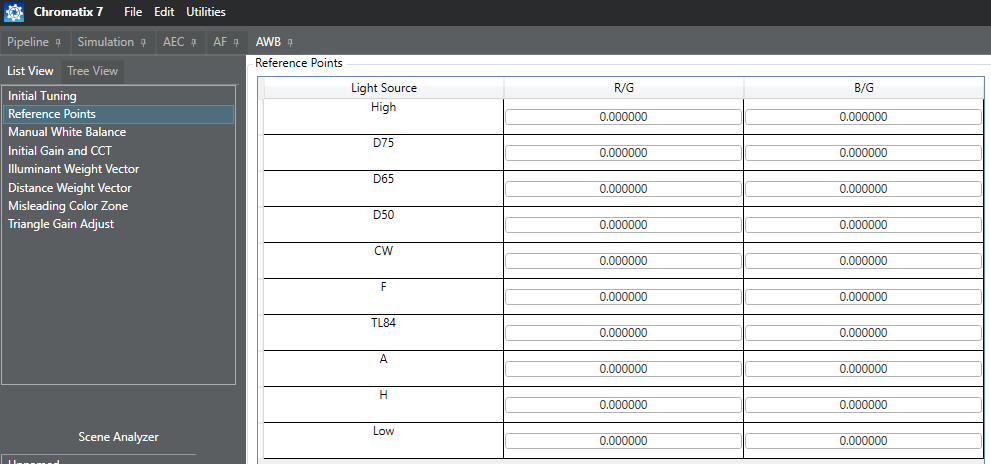

Before performing any fine tuning, be sure to run the AWB auto-tune procedure to
generate initial parameter values.
It is not recommended to do manual tuning for reference points because this is the base
information for generating many tuning parameters. It is recommended to follow the AWB
reference points auto-tune procedure.
-
Open the project and click the AWB tab.
-
Click Reference Points to display
the current values.

-
Click the field that requires modification enable editing.
Update the reference point value and click outside the field to save the change.
Note: It is
recommended to use high CCT and low CCT reference points as-is from the
auto-tune computation.
-
Select to save the changes.